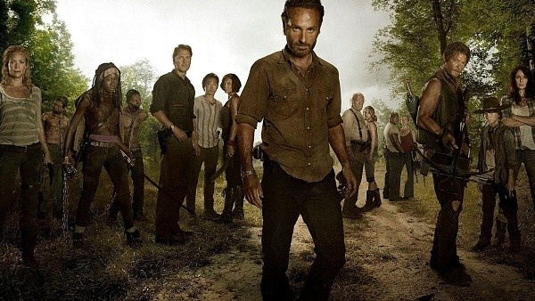
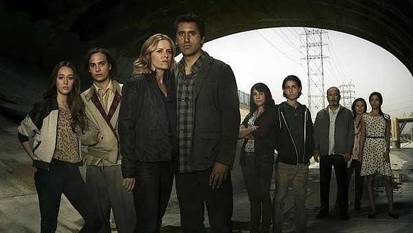
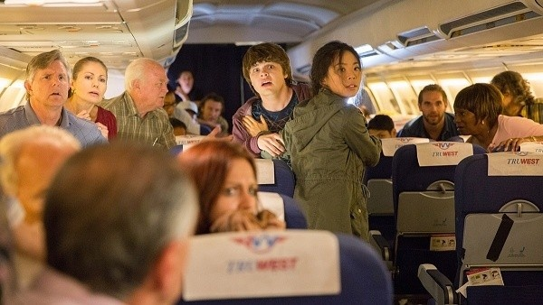
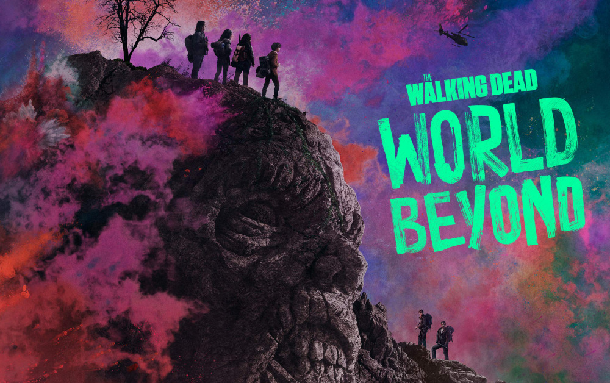
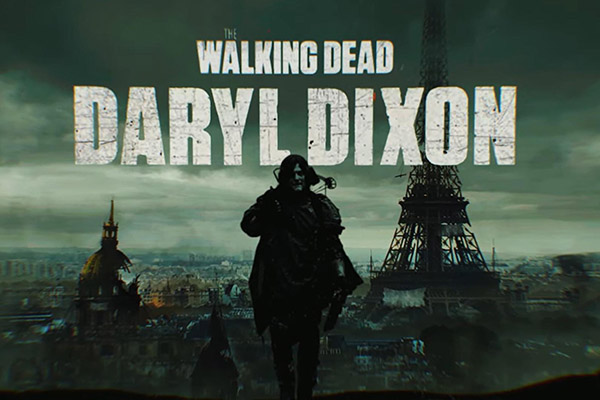

Visão Geral
Robert Kirkman e Tony Moore são os criadores dos quadrinhos de sucesso The Walking Dead que viriam a ser adaptados em uma das séries mais populares de sempre.
A história se foca em Rick Grimes, que acorda de um coma apenas para descobrir que o mundo foi devastado pelo apocalipse zumbi. Rick tem então como objetivo procurar seu filho e esposa e tentar sobreviver no novo mundo.
Mas a beleza de The Walking Dead e o que a destaca de outras histórias do gênero zumbi é o fato de se focar nas relações entre os sobreviventes mais do que no terror dos monstros que os ameaçam.
Embora seja uma franquia que não tem medo de chocar o público com temas sensíveis e acontecimentos brutais, o drama interior dos personagens continua sendo algo fulcral, lembrando todo mundo de que por vezes os vivos são mais perigosos que os mortos.
Personagens
Alguns dos principais personagens da série incluem:
Rick é considerado o personagem principal tanto dos quadrinhos como da série.
Ele começa como um policial que acorda no hospital após ter sido alvejado e ter estado em coma. Ao perceber que o mundo foi invadido por zumbis ele se aventura na busca de sua mulher e filho.
Durante toda a história, Rick se torna o líder dos sobreviventes que encontra e vive atormentado com o medo de perder sua humanidade.

Carl é o filho de Rick e Lori. Ele começa seu percurso como um garoto normal e inocente, mas os eventos tanto dos quadrinhos como da série o vão mudar e fazer com que se torne em um adolescente frio e, por vezes, implacável.

Daryl é um personagem totalmente original da série, não aparecendo nos quadrinhos de The Walking Dead. Porém, o personagem representado por Norman Reedus se tornou em um dos mais populares da franquia.
No início de seu percurso, Daryl é volátil e temperamental, mas tolerado pelo grupo devido a suas habilidades na caça e na luta contra os mortos-vivos. Mais tarde, ele começa criando ligações fortes com os sobreviventes, se tornando em um dos membros mais importantes do grupo.
Glenn começa como um jovem que se separa de sua família no início do apocalipse. Sendo perspicaz e engenhoso, ele acaba se tornando um membro importante no grupo de sobreviventes liderado por Rick.
Nos quadrinhos, Maggie começa como uma personagem insegura e dependente dos restantes. Já na série, embora inexperiente, Maggie é muito mais segura de si mesmo e independente.
Em ambas as versões, a personagem segue o mesmo percurso de fortalecimento, tomando cada vez mais preponderância no futuro do grupo.
Michonne é uma das personagens mais adoradas pelos fãs tanto nos quadrinhos como na telinha. Armada com uma catana, ela encontrou o grupo de sobreviventes liderado por Rick e se tornou em um membro valioso.
A sua história antes de se juntar ao grupo, embora ligeiramente alterada na série, é uma das mais trágicas da franquia.
Carol é uma das personagens da série que mais contrasta com sua versão original.
Nos quadrinhos, ela é uma mulher neurótica e ingênua, que se torna cada vez mais instável emocionalmente, entrando em um caminho de auto-destruição.
Já na telinha, Carol se torna em uma sobrevivente pragmática e disposta a fazer o que for necessário para sobreviver, tentando não perder sua empatia.
Outro vilão carismático e brutal, Negan lidera um grupo de sobreviventes na comunidade Santuário. Ele entra em contacto com Rick e os restantes sobreviventes ao tentar oprimir as outras comunidades de forma a recolher recursos para sua própria sobrevivência.
As séries
The Walking Dead está dividida em várias series...
The Walking Dead (2010 - 2023)
Após o sucesso dos quadrinhos, The Walking Dead foi adaptado à telinha em 2010. Os grandes arcos e personagens originais se mantiveram, mas com algumas alterações que ajudaram a manter o mistério e interesse na série.
Fear The Walking Dead
omo era o mundo antes do início da epidemia de "The Walking Dead"? Ambientada em Los Angeles, Fear The Walking Dead narra o início da contaminação, através dos olhos de uma família tentando sobreviver. A orientadora pedagógica Madison Clark (Kim Dickens) precisa cuidar dos dois filhos - o viciado Nick (Frank Dillane) e a adolescente Alicia (Alycia Debnam-Carey). Já seu marido, o professor de inglês Travis (Cliff Curtis), decide partir em busca de Chris (Lorenzo James Henrie), seu filho do primeiro casamento, e da ex-esposa Liza Ortiz (Elizabeth Rodriguez). À medida que a civilização colapsa ao seu redor, eles não têm outra opção a não ser se reinventar, aprender novas habilidades e adotar novas atitudes.
Webepisodeos
No site da AMC você pode assistir a pequenos vídeos que contam algumas histórias passadas no início do apocalipse zumbi. Esses curtas estão interligados tanto com The Walking Dead como Fear the Walking Dead.
World Beyond
The Walking Dead: World Beyond é uma série que apresenta a primeira geração que cresceu durante o apocalipse zumbi. A série possui uma primeira temporada com 10 episódios que narram a história das crianças que nasceram em meio ao caos e se tornaram jovens em processo de crescimento, para se tornarem heróis ou vilões.
Tales Of The Walking Dead

Spin-off de The Walking Dead, a série promete ser uma antologia focada em personagens novos ou já existentes, explorando o passado e as experiências de cada um na luta contra o apocalipse zumbi. A trama de cada episódia irá se aprofundar ainda mais na mitologia e universo criado durante as onze temporadas de The Walking Dead e trazer pontos de vista ainda desconhecidos sobre navegando por esse novo mundo distópico. Desde uma mulher em negação sobre a gravidade da situação com os mortos até um cientista tentando estudar os padrões de comportamento deles, Tales of the Walking Dead apresenta situações absurdas e extremas onde pessoas precisam enfrentar seus limites e cometer atrocidades para sobreviver nesse novo universo violento e assassino.
Dead City

Em Isle of the Dead, spin off de The Walking Dead, acompanhamos os queridos personagens Maggie (Lauren Cohan) e Negan (Jeffrey Dean Morgan) em uma viagem pós-apocalíptica por Manhattan. Há muito tempo isolada do continente, a cidade se encontra em ruínas, cheia de mortos e habitantes que fizeram de Nova York seu próprio reino cheio de anarquia, perigo, beleza e terror.
Projetos Futuros
Daryl Dixon
The Walking Dead: Daryl Dixon é mais um spin-off de The Walking Dead. Dessa vez, a trama gira em torno de Daryl Dixon (Norman Reedus) e Carol Peletier (Melissa McBride), os dois únicos personagens que fazem parte da franquia desde a 1ª temporada Na série, o protagonista da distopia chega à França para tentar recomeçar mas enfrenta muitos deafios para tentar entender o que o levou até lá e como retornará para a Commonwealth. Enquanto isso, ele descobre não só que tem mais inimigos do que imagina mas também uma nova missão de resgate que pode salvar a humanidade.
The Ones Who Live

A minissérie acompanhará o retorno de Rick and Michonne para o universo de The Walking Dead enquanto tentam conciliar o forte sentimento que nutrem um pelo o outro com as dificuldades do mundo rodeado por zumbis.
Referências
Para obter mais informações sobre a série, consulte: